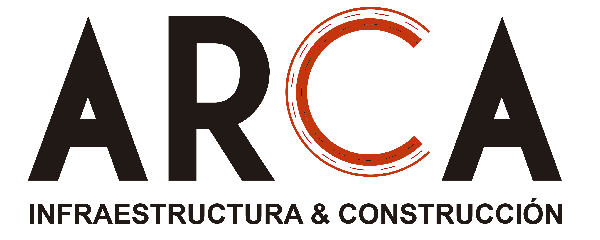

Cargando modelo 3D…
Capas y vista
Modelo estructural
Proyecto
En obra (levantamiento)
Placa propuesta
Etiquetas de desfase y cotas
Muros
Exagerar desviaciones:
×1
Ancla de PROYECTO (CIM-04)
Ancla EN OBRA (topografía)
Base del ancla en el concreto
Desfase proyecto → obra
Placa de proyecto (barrenos Ø21)
Placa PROPUESTA (barrenos Ø33 en posición real)
×